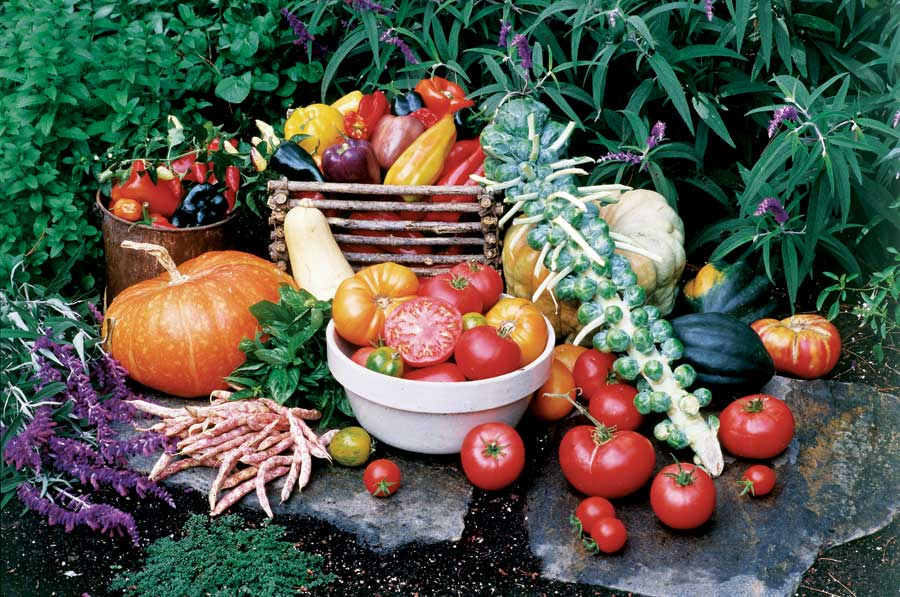

ROSALIND CREASY
This bountiful harvest of heirloom vegetables features a hefty stalk of Brussels sprouts. Although the Brussels sprout is a common vegetable today, different varieties are not always easy to find. Each year, members of the Seed Savers Exchange provide a quality selection of Brussels sprouts in their yearbook.